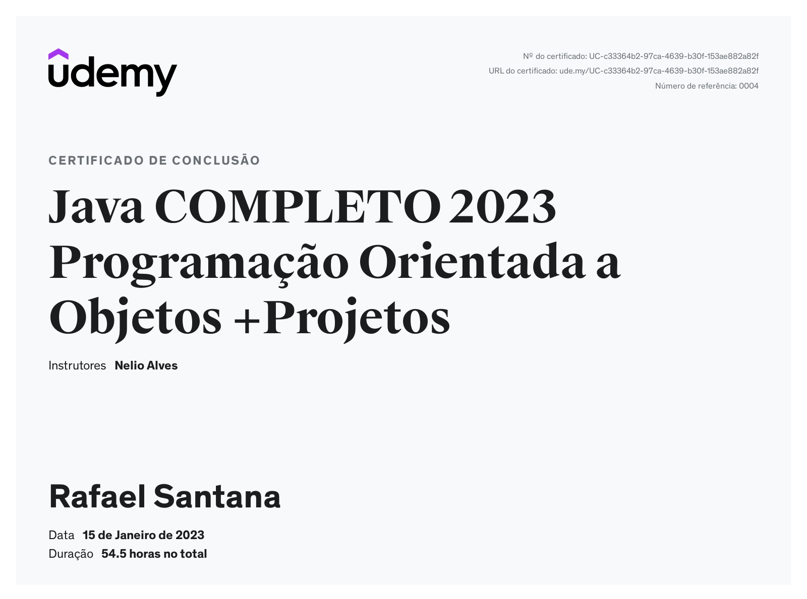
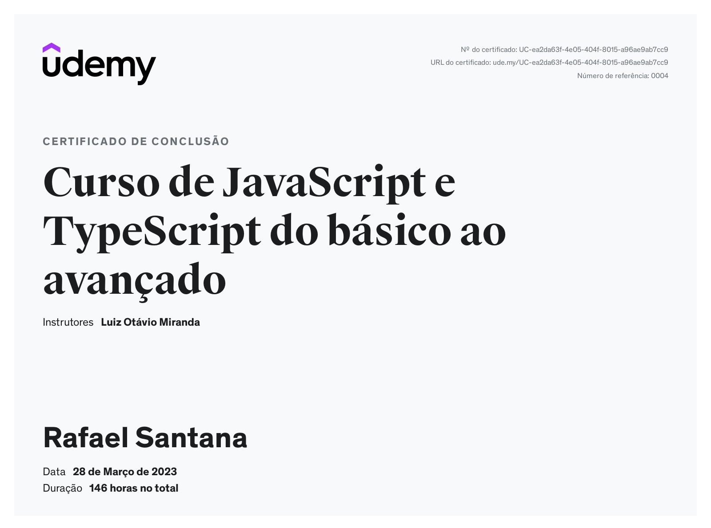
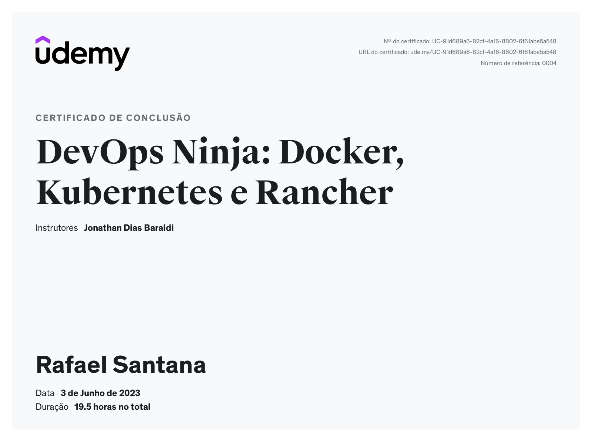

Meus Certificados

Programação Orientada a Objetos
Instrutor: Nélio Alves
Plataforma: Udemy
Bem didático, foi meu início na programação. Fiz para aprender mais sobre Java e POO, que estava estudando na faculdade.
2023
40 horas
Intermediário

JavaScript e TypeScript
Instrutor: Luiz Otávio Miranda
Plataforma: Udemy
Um desafio novo e extenso. Aprendi muito, desde o básico até Node.js, o que me inspirou a focar em Back-End.
2023
60 horas
Avançado

DevOps Ninja: Docker, Kubernetes e Rancher
Instrutor: Jonathan Dias Baraldi
Plataforma: Udemy
Curso completo sobre containerização e orquestração de containers, abrangendo Docker, Kubernetes e Rancher. Aprenda a criar, gerenciar e escalar aplicações containerizadas, implementar CI/CD e dominar as melhores práticas de DevOps.
Docker
Kubernetes
Rancher
DevOps
Containers